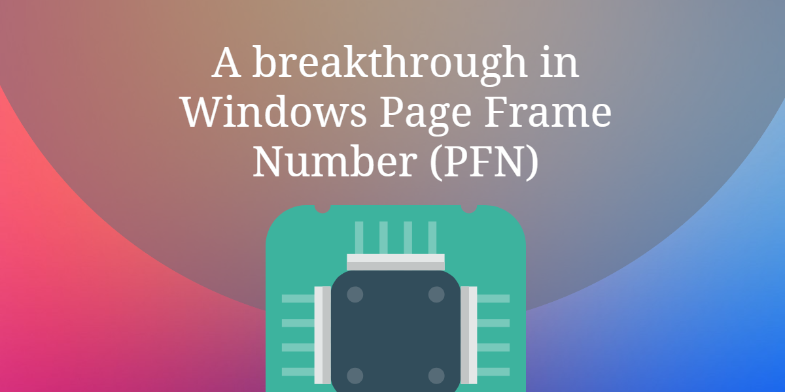
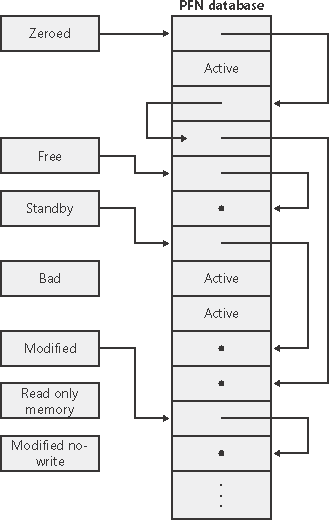
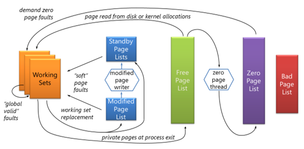
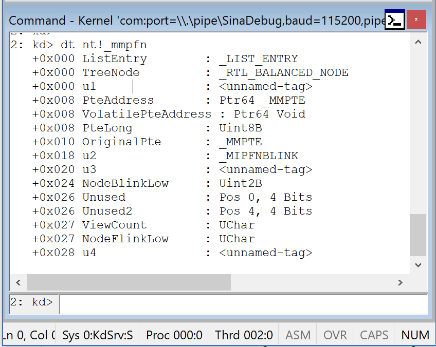

Introduction (Page Frame Number)
Windows and almost all the OSs use Page Frame Number Database in order to have a track of virtually allocated pages to know which page must be freed or evicted or if a page needs to be cached and etc.
All of these kinds of stuff manages through a list, called Page Frame Number (PFN). A long list of explanation about the states of every physically and virtually allocated pages and its corresponding attributes.
In the rest of this post, I’ll explain about Windows implementation of Page Frame Number with lots of practical examples, the following part describes basic concepts implementations, you should also read the next part in order to see how can you use or change these attributes.
If you’re familiar with non-PAE mode and PAE mode systems then I should note that in a non-PAE mode every PFN structure takes 24 bytes while in a PAE mode system this size increases to 28 so if your pages are 4096 bytes then allocates about 24 bytes more to keep tracks of every page.
As you can see here:
In non-PAE mode 24 bytes in the PFN database represents each 4 KB page of physical memory – this is a ratio of 170:1. In PAE mode 28 bytes represents each 4 KB page of physical memory – this is a ratio of 146:1. This means that roughly 6 MB or 7 MB is needed in the PFN database to describe each 1 GB of physical memory. This might not sound like much, but if you have a 32-bit system with 16 GB of physical memory, then it requires about 112 MB of the 2 GB of kernel virtual address space just to address the RAM. This is another reason why systems with 16 GB of physical memory or more will not allow the 3GB mode (also known as IncreaseUserVA) which increases the user virtual address space to 3 GB and decreases the kernel virtual address space to 1 GB on 32-bit systems.
One of the benefits of having extended pages (e.g 2MB for every page) is that it needs lower amounts of MMPFN.
Before start getting deep into the PFN, please remember the term “Page” is mostly used in the operating system level concepts whereas “Frame” is used in CPU Level concepts, therefore “Page” means virtual page and “Page Frame” means physical page.
PFN Lists
The Page Frame Number consists of lists that describe the state of some pages, there are Active Lists which shows an active page (e.g in working sets or etc), Standby List which means a list that previously backed in the disk and the page itself can be emptied and reused without incurring a disk IO, Modified List which shows that the page is previously modified and somehow must be written to the disk, Freed List, as the name describes, it shows a page that is no longer needed to be maintained and can be freed and finally Zero List that describes a page that is free and has all zeroes (0) in it.
A great picture derived from here which shows how the PFN database lists are related to each other :

These lists are used to manage memory in “page faults” state in the way that everytime a “page fault” occurs, Windows tries to find an available page form, Zero List, if the list is empty then it gets one from Freed List and zeroes the page and use it, on the other hand, if the Freed List is also empty then it goes to the Standby List and zeroes that page.
The Zero Page Thread
In Windows, there is a thread with the priority of 0 which is responsible for zeroing memory when system is idle and is the only thread in the entire system that runs at priority 0. (which is the lowest available priority because the user threads are at least 1). This thread clears the Freed List whenever is possible. Also, there is a function in Windows called RtlSecureZeroMemory() which frees a location securely but in the kernel perspective nt!KeZeroPages is responsible for freeing the pages.
The following picture shows the behavior of zero-thread:

Let’s find the Zero Thread!
We know that it comes from system process, its priority is 0, this should be enough and nothing more is needed. First try to find System’s nt!_eprocess:
1
!process 0 System
Now we can see the System’s threads, the details of our target thread (zero-thread) are:
1
2
3
4
5
6
7
8
9
10
11
12
13
14
15
16
17
18
19
20
21
22
23
THREAD ffffd4056ed00040 Cid 0004.0040 Teb: 0000000000000000 Win32Thread: 0000000000000000 WAIT: (WrFreePage) KernelMode Non-Alertable
fffff8034637f148 NotificationEvent
fffff80346380480 NotificationEvent
Not impersonating
DeviceMap ffff99832ae1b010
Owning Process ffffd4056ec56040 Image: System
Attached Process N/A Image: N/A
Wait Start TickCount 4910 Ticks: 4 (0:00:00:00.062)
Context Switch Count 21023 IdealProcessor: 3
UserTime 00:00:00.000
KernelTime 00:00:01.109
Win32 Start Address nt!MiZeroPageThread (0xfffff80346144ed0)
Stack Init ffffe700b7c14c90 Current ffffe700b7c14570
Base ffffe700b7c15000 Limit ffffe700b7c0f000 Call 0000000000000000
Priority 0 BasePriority 0 PriorityDecrement 0 IoPriority 2 PagePriority 5
Child-SP RetAddr Call Site
ffffe700`b7c145b0 fffff803`46016f8a nt!KiSwapContext+0x76
ffffe700`b7c146f0 fffff803`46016951 nt!KiSwapThread+0x16a
ffffe700`b7c147a0 fffff803`46014ba7 nt!KiCommitThreadWait+0x101
ffffe700`b7c14840 fffff803`461450b7 nt!KeWaitForMultipleObjects+0x217
ffffe700`b7c14920 fffff803`460bba37 nt!MiZeroPageThread+0x1e7
ffffe700`b7c14c10 fffff803`46173456 nt!PspSystemThreadStartup+0x47
ffffe700`b7c14c60 00000000`00000000 nt!KiStartSystemThread+0x16
As you can see, its start address is at nt!MiZeroPageThread and its priority-level is 0 and if we see the call-stack then we can see nt!MiZeroPageThread was called previously.
For more information please visit Hidden Costs of Memory Allocation.
nt!_MMPFN
The Windows structure for PFN is nt!_MMPFN which you can see below :

As you see, _MMPFN takes 28 bytes.
PFN records are stored in the memory based on their physical address order which means you can always calculate the physical address with the help of PFN.
1
Physical Address = PFN * page size(e.g 4096 Byte) + offset
The address of the PFN database is located at nt!MmPfnDatabase, you can use the following example to get your PFN database address in Windbg.
1
2
2: kd> x nt!MmPfnDatabase
fffff800`a2a76048 nt!MmPfnDatabase = <no type information>
!memusage
Another very useful command in windbg is !memusage, this command gives almost everything about PFN and pages in your memory layout and its corresponding details (e.g files, fonts, system drivers, DLL modules, executable files including their names and their paging bits modifications).
A brief sample of this command is shown below :
1
2
3
4
5
6
7
8
9
10
11
12
13
14
15
16
17
18
19
20
21
22
23
24
25
26
27
28
29
30
31
32
33
34
35
36
37
38
39
40
41
42
43
44
45
46
47
48
49
50
51
52
53
54
55
56
57
58
59
60
61
62
63
64
65
66
67
68
69
70
71
72
2: kd> !memusage
loading PFN database
loading (100% complete)
Compiling memory usage data (99% Complete).
Zeroed: 9841 ( 39364 kb)
Free: 113298 ( 453192 kb)
Standby: 105520 ( 422080 kb)
Modified: 7923 ( 31692 kb)
ModifiedNoWrite: 0 ( 0 kb)
Active/Valid: 286963 ( 1147852 kb)
Transition: 45 ( 180 kb)
SLIST/Bad: 567 ( 2268 kb)
Unknown: 0 ( 0 kb)
TOTAL: 524157 ( 2096628 kb)
Dangling Yes Commit: 140 ( 560 kb)
Dangling No Commit: 37589 ( 150356 kb)
Building kernel map
Finished building kernel map
(Master1 0 for 80)
(Master1 0 for 580)
(Master1 0 for 800)
(Master1 0 for 980)
Scanning PFN database - (97% complete)
(Master1 0 for 7d100)
Scanning PFN database - (100% complete)
Usage Summary (in Kb):
Control Valid Standby Dirty Shared Locked PageTables name
ffffffffd 11288 0 0 0 11288 0 AWE
ffffd4056ec4c460 0 112 0 0 0 0 mapped_file( LeelUIsl.ttf )
ffffd4056ec4c8f0 0 160 0 0 0 0 mapped_file( malgun.ttf )
ffffd4056ec4d6b0 0 108 0 0 0 0 mapped_file( framd.ttf )
.....
ffffd4057034ecd0 328 148 0 0 0 0 mapped_file( usbport.sys )
ffffd4057034f0e0 48 28 0 0 0 0 mapped_file( mouclass.sys )
ffffd4057034f7d0 32 28 0 0 0 0 mapped_file( serenum.sys )
ffffd405703521a0 0 20 0 0 0 0 mapped_file( swenum.sys )
.....
-------- 0 20 0 ----- ----- 0 session 0 0
-------- 4 0 0 ----- ----- 0 session 0 ffffe700b8b45000
-------- 4 0 0 ----- ----- 0 session 1 ffffe700b8ead000
-------- 32520 0 84 ----- ----- 1324 process ( System ) ffffd4056ec56040
-------- 2676 0 0 ----- ----- 304 process ( msdtc.exe ) ffffd405717567c0
-------- 4444 0 0 ----- ----- 368 process ( WmiPrvSE.exe ) ffffd405718057c0
-------- 37756 0 60 ----- ----- 1028 process ( SearchUI.exe ) ffffd405718e87c0
.....
-------- 8 0 0 ----- 0 ----- driver ( condrv.sys )
-------- 8 0 0 ----- 0 ----- driver ( WdNisDrv.sys )
-------- 52 0 0 ----- 0 ----- driver ( peauth.sys )
-------- 24744 0 0 ----- 0 ----- ( PFN Database )
Summary 1147852 422260 31692 129996 204428 25156 Total
.....
b45b 64 0 0 60 0 0 Page File Section
b56b 4 0 0 4 0 0 Page File Section
b7ec 84 0 0 64 0 0 Page File Section
b905 12 0 0 0 0 0 Page File Section
bf5c 4 0 0 0 0 0 Page File Section
.....
Note that !memusage takes a long time to finish its probes.
What if you want to know more about these pages? The Windbg help document mentioned :
Remarks
You can use the !vm extension command to analyze virtual memory use. This extension is typically more useful than !memusage. For more information about memory management, see Microsoft Windows Internals, by Mark Russinovich and David Solomon. (This book may not be available in some languages and countries.)
The !pfn extension command can be used to display a particular page frame entry in the PFN database.
Now we want survey among these command in a more detailed perspective.
That’s enough for now… I try to make another part that describes the PFN more practically, so make sure to check the blog more frequently.
The second part is also published at Inside Windows Page Frame Number (PFN) – Part 2.
References
- [Getting Physical: Extreme abuse of Intel-based Paging Systems - Part 2 - Windows] (https://www.coresecurity.com/blog/getting-physical-extreme-abuse-of-intel-based-paging-systems-part-2-windows)
- [Page Frame Number (PFN) database] (https://social.technet.microsoft.com/wiki/contents/articles/15259.page-frame-number-pfn-database.aspx)
- [Exploring Windows virtual memory management] (https://www.triplefault.io/2017/08/exploring-windows-virtual-memory.html)
- [Page Frame Number Database] (https://flylib.com/books/en/4.491.1.69/1/)
- [PDC10: Mysteries of Windows Memory Management Revealed: Part Two] (https://blogs.msdn.microsoft.com/tims/2010/10/29/pdc10-mysteries-of-windows-memory-management-revealed-part-two/)
Comments powered by Disqus.